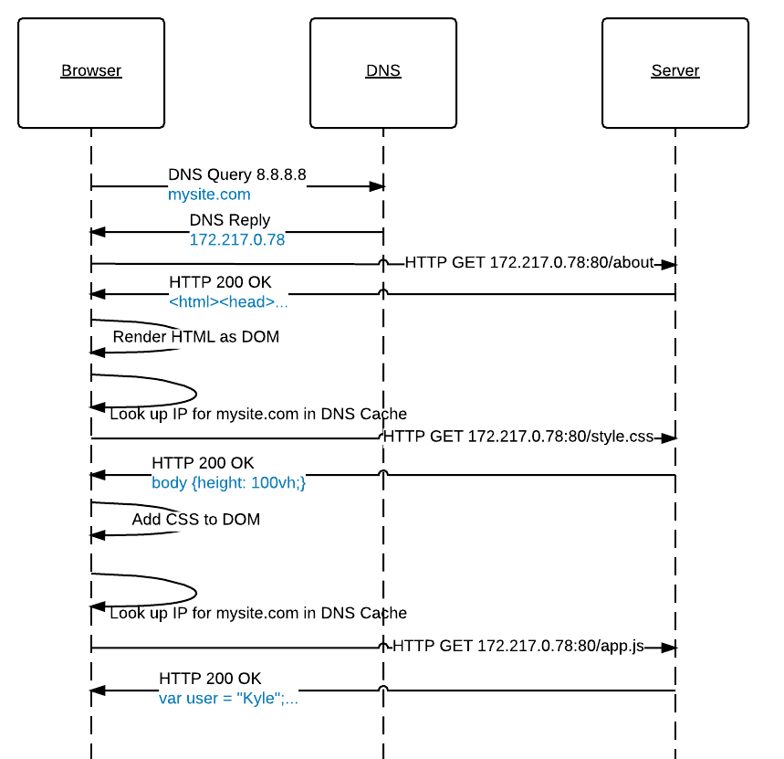

Instruction
This lesson is part 2 of a 3-part series I teach on JWT auth with Rails. Each lesson builds cumulatively, and by the last lesson students are able to reliably demonstrate mastery of all lesson objectives. The students in this lesson have been programming for approximately 7 weeks. The instruction relies on a gradual release of responsibility ("I do" → "We do" → "You do"), coupled with live-coding and a high proportion of active learning.
In the 78 minute lesson, students spent 22 minutes working independently and an additional 33 minutes actively participating in the lesson. All 15 students in this lesson were able to independently demonstrate the first two objectives by the end of the lesson, as well as the primary objective from the first part in the series. We ran out of time for the third objective, so it was pushed to a later lesson.
Learning Objectives
- Verify users' identity in Rails
- Issue signed tokens to users
- Differentiate between authorization and authentication
Lesson Recording
Lesson Notes
- : Instructor previews learning objectives
- : Students rehearse the skills from part 1 (user creation and password hashing) independently.
- : Instructor establishes the need for learning
- : Instructor demonstrates the skills for the first objective (I do)
- : Students take turns coaching the instructor through the skills for the first objective (We do)
- : Instructor answers questions about the skills for the first objective
- : Students practice new skills independently (You do)
- : Class discussion of the second objective (including a comparison to the same auth process in Node.js)
- : Instructor does an additional demonstration of the first objective
- : Instructor previews the second objective
- : Instructor demonstrates the skills for the second objective (I do)
- : Class discussion of the second objective
- : Students take turns coacching the instructor through objective 2 as a class (We do)
- : Class discussion of the second objective
- : Students practice new skills independently (I do)
- : Lesson questions and preview of part 3
Lesson Whiteboard

Assessment
I wrote a series of assessments for this standard:
-
Demonstrate an understanding of modern computing concepts
- Diagram web requests
They required students to take multiple common HTTP scenarios and draw sequence diagrams detailing what was happening. I wrote 3 variants, and included a collection of exercises that isolated particular skills.
These assessments were taken 396 times by 123 unique students, and had an overall 93% pass rate.
Sample Instructions
Make a sequence diagram that describes the interactions between clients, servers, DNS, and databases for this scenario: A browser makes an HTTP request to the website mysite.com/about, which returns its about.html page. It also has a linked stylesheet, style.css, and a linked JavaScript file, app.js. Note: The IP address of mysite.com is 172.217.0.78, and the IP address of the DNS server is 8.8.8.8.
Sample Rubric
Passing requires all values.
## Functional
In this order:
* [ ] Makes DNS query with mysite.com from browser to the DNS server at 8.8.8.8
* [ ] DNS server replies back to browser with 172.217.0.78
* [ ] Browser makes request to web server
* [ ] Browser makes HTTP GET request to 172.217.0.78:80/about
* [ ] Server responds with HTTP 200 OK and an HTML payload
* [ ] Browser renders the HTML into the DOM
* [ ] Browser looks up the IP address for the site in its DNS cache
* [ ] Browser makes an HTTP GET request to web server 172.217.0.78:80/style.css
* [ ] Server responds with HTTP 200 OK and a CSS payload
* [ ] Browser adds CSS rules to the DOM
* [ ] Browser looks up the IP address for the site in its DNS cache
* [ ] Browser makes an HTTP GET request to web server 172.217.0.78:80/app.js
* [ ] Server responds with HTTP 200 OK and a JS payload
## Style
* [ ] Has actors for browser, DNS, and server
* [ ] Life-lines descend down from actors
* [ ] Use arrows to indicate direction
Sample Solution
Philosophy
In February 2020, I gave a meetup talk called Why Johnny Can't Code: An Evening of Rants about Software Education With Kyle Coberly about my beliefs about software education. The talk was in Lean Coffee format, meaning the content was controlled by the audience in real-time.
Talk Recording
Talk Notes
- : Intro
- : A live reenactment of the opening chapter of Why Johnny Can't Add by Morris Kline.
- : Opening remarks
- : How do you get better at teaching?
- : How do you get better at learning?
- : Once someone is in their first job, how can they most effectively improve their skills especially if they are under-supported by their team?
- : What's up with online courses?
- : Best story/day/anecdote at Flatiron?
- : What is the best way for young people to get into learning code?
- : How should school look?
- : Should I be worried about an over saturation of React developers?
- : What do computer science programs get wrong? What do they get right?
- : Closing remarks
- : Q & A
Diagrams


Additional Questions
Of the 26 addtional questions I wasn't able to get to, I answered several afterward online:
- What are some blockers with learning how to think in abstractions with code? Do people who take things literally have more problems with this than others? Honestly, it's just an experience thing. The opposite can be a problem (being unable to think literally), but comfort with abstractions comes from following certain steps long enough and giving a name to the pattern.
- Talk more about topic ghettos. Topic ghettos are when you group up a bunch of related things and teach them at the same time, but independently from how they're actually applied. In other words, teaching a gaggle of math concepts together is tidy, but if each of the math concepts are applied in wildly different ways it's difficult to create relevance with them.
- How is coding is different than other kinds of skills? It isn't. It has more in common with throwing a football, meditating, or dancing than it doesn't. A difference might be that it can be used to leverage so many other skills that it makes them more valuable in the process, but it's acquired and developed in the same way.
- Whats the best advice you'd give developers on searching for the right job? (Particularly when it's the 1st job out of school)? Network. Cold applications to job postings are fine and should be in your rotation too, but you have a much better chance going through someone you've met, in-person or virtually. In order of preference, companies generally hire for roles:
- Internally ("We moved Sarah into that role")
- Internal referral ("Sarah recommended someone")
- External referral ("Sarah knows someone who recommended someone")
- Closed external posting (eg. Denver Devs gigs post)
- Agency recruiter
- Open external posting (eg. Indeed)
- Can agile be used in teaching/learning? Absolutely! My education teams work in day-long iterations, we plan each morning and retro each afternoon, we collect lots of data, and only do the highest priority things.